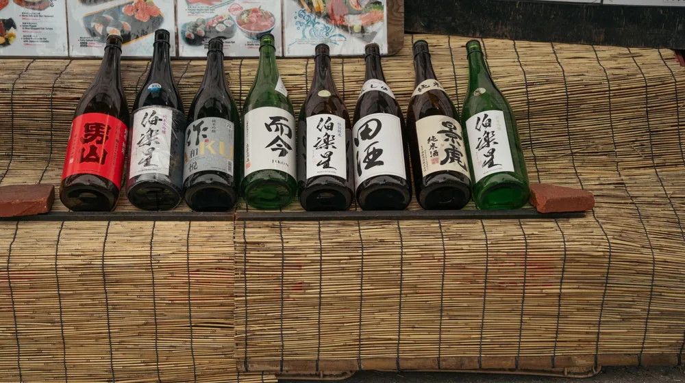

전국 가양주 양조장 투어 비교 가이드: 나에게 맞는 코스 찾기
사진: Luis Becerra Fotógrafo / Pexels (무료 이미지, 출처 표기)
최근 독특한 풍미와 전통을 자랑하는 소규모 가양주(집에서 직접 빚는 술) 양조장을 찾는 발길이 늘고 있습니다. 대량 생산되는 일반 희석식 소주와 달리, 지역의 물과 쌀, 누룩으로 빚어낸 가양주는 저마다 깊은 이야기를 품고 있습니다. 하지만 소규모 양조장은 대기업 공장과 달리 상시 개방하지 않거나 사전 예약이 필수인 경우가 많아 철저한 준비가 필요합니다. 실패 없는 전통주 여행을 위한 지역별 코스와 예약 팁을 알차게 정리해 드립니다.
1. 가양주 양조장 투어, 왜 소규모 양조장일까?

가양주 양조장 투어의 가장 큰 매력은 술이 만들어지는 발효실을 직접 눈으로 보고, 갓 짜낸 신선한 원주를 맛볼 수 있다는 점입니다. 대규모 공장에서는 느끼기 힘든 양조인(술을 빚는 사람)과의 긴밀한 소통도 가능합니다. 술을 빚을 때 사용하는 독특한 누룩 향을 맡으며 전통주의 역사와 양조 철학을 듣다 보면, 술 한 잔에 담긴 가치가 다르게 다가옵니다.
2. 지역별 대표 소규모 양조장 비교
국내에는 각 지역의 특산물을 활용해 개성 넘치는 술을 빚는 소규모 양조장들이 많습니다. 농림축산식품부와 한국농수산식품유통공사(aT)의 '찾아가는 양조장' 정보를 바탕으로, 체험 프로그램이 알차게 구성된 대표적인 곳들을 표로 비교해 드립니다.
※ 2026년 기준 운영 정보이며, 계절 및 양조장 사정에 따라 체험 프로그램과 비용이 변동될 수 있으므로 방문 전 유선 확인을 권장합니다.
3. 실패 없는 양조장 투어 예약 및 방문 방법
소규모 양조장은 1인 기업이나 가족 단위로 운영하는 곳이 많아 불쑥 찾아가면 내부를 둘러보기 어렵습니다. 매끄러운 투어를 위해 다음 단계를 차례대로 따라가 보시기 바랍니다.
- 양조장 선정 및 일정 확인: 가보고 싶은 지역의 양조장을 선택한 후, 공식 홈페이지나 SNS를 통해 투어 운영 여부와 요일을 확인합니다.
- 사전 예약 진행: 대부분의 소규모 양조장은 최소 3일에서 일주일 전 예약이 필수입니다. 전화나 네이버 예약을 이용해 인원수와 날짜를 확정하세요.
- 이동 수단 계획 수립: 전통주 투어의 핵심은 '시음'입니다. 운전자는 시음을 할 수 없으므로 대중교통 동선을 짜거나 대리운전 서비스를 미리 염두에 두어야 합니다.
4. 안전하고 즐거운 가양주 투어를 위한 주의사항
성공적인 투어를 위해 꼭 기억해야 할 체크리스트가 있습니다. 첫째, 과도한 향수나 화장품 사용은 피하는 것이 좋습니다. 미세한 누룩 향과 술의 아로마(술에서 풍기는 고유의 향)를 제대로 느끼기 위해서입니다.
둘째, 양조장 내 발효실은 온습도가 엄격하게 관리되는 민감한 공간입니다. 안내자의 지시 없이 발효 탱크를 만지거나 내부 시설을 훼손하지 않도록 각별히 주의해야 합니다. 셋째, 안전과 위생을 위해 긴 머리는 단정히 묶고, 움직이기 편안한 복장과 미끄럽지 않은 운동화를 착용하는 것을 추천합니다.
5. 집에서 손쉽게 시작하는 나만의 가양주 만들기
투어를 다녀온 후 전통주 매력에 푹 빠졌다면 집에서 직접 홈브루잉(가정 양조)을 시도해 볼 수 있습니다. 처음부터 복잡한 도구를 준비하기 부담스럽다면 시중에 판매되는 전통주 만들기 키트를 활용하는 것도 좋은 방법입니다. 쌀가루와 누룩이 계량되어 있어 물만 부으면 며칠 만에 나만의 신선한 수제 막걸리를 완성할 수 있습니다.
🔗 이 글도 함께 보면 좋아요: 가양주 안주 페어링 완벽 가이드: 맛을 2배 살리는 4가지 공식
관련 추천 상품
이 포스팅은 쿠팡 파트너스 활동의 일환으로, 이에 따른 일정액의 수수료를 제공받습니다.
한눈에 보는 상품 목록
수제 가양주 홈브루잉 키트
전통주 발효 전용 용기